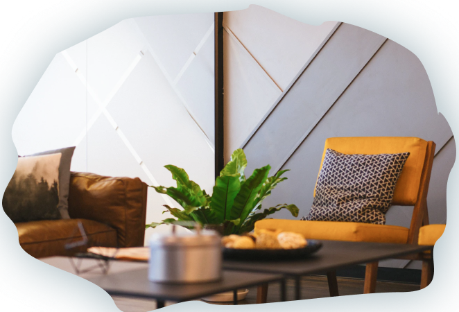

От 45 000р за комнату*
Доступная звукоизоляция квартир. *Средняя цена услуги под ключ, гарантия

Мы «ЗА» спокойную жизнь «В тишине», где приходя домой Вы наконец сможете расслабиться, выспаться и отдохнуть от суеты и повседневных забот.
Звукоизоляция - ключ к решению в вопросах тишины.
звукоизолировано за 3 года
> 15 000 кв.м.Произведено работ на
> 700 объектахРаботаем по договору с гарантией
1,5 годаЕсли правильно подобрать «пирог» из современных материалов, эффективность звукоизоляции возрастает от 45 до 90%. Обычно достаточно снизить громкость звуков в 2-3 раза, чтобы Вы перестали их замечать.
лучше довериться профи для максимального результата
Мы построили 4 комнаты, соответствующие обычной квартире, а также создали имитацию шума, как в многоквартирных домах.
Заходя в комнату, Вы сами слышите какое из решений Вам подходит. Посмотрите видео, как это работает.
детский плач, лай маленькой собаки, стоны, скрипы
3-5 см
45-55 %
звуки телевизора, крики женщин, фортепиано
8,5 см
65-70 %
лай собаки, басгитара, вечеринки соседей
6,5 см
85 - 90%
В большинстве случаев достаточно выявить и точечно звукоизолировать проблемные поверхности, а при звукоизоляции на этапе ремонта-смежные стены c cоседями и потолки в спальных зонах . Если вы делаете ремонт, достаточно добавить 1-2 слоя материалов и несколько дополнительных операций-это в 2-3 раза выгоднее , чем в последствии делать звукоизоляцию заново. В квартирах с ремонтом применяем инструмент с минимальным пыли образованием и заберем мусор после монтажа, предварительно согласовав.
В большинстве случаев достаточно выявить и точечно звукоизолировать проблемные поверхности, а при звукоизоляции на этапе ремонта-смежные стены c cоседями и потолки в спальных зонах . Если вы делаете ремонт, достаточно добавить 1-2 слоя материалов и несколько дополнительных операций-это в 2-3 раза выгоднее , чем в последствии делать звукоизоляцию заново. В квартирах с ремонтом применяем инструмент с минимальным пыли образованием и заберем мусор после монтажа, предварительно согласовав.